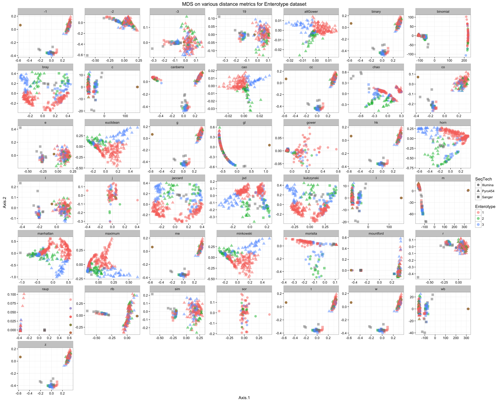
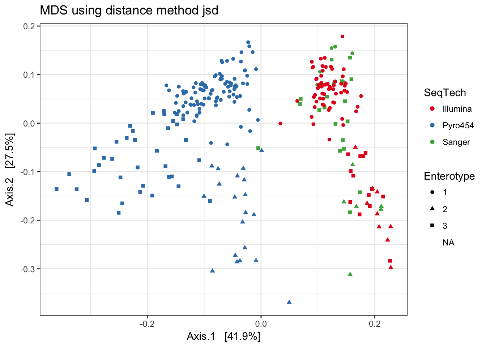
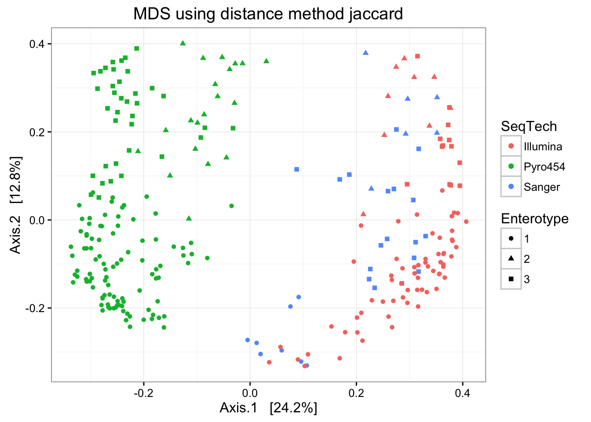
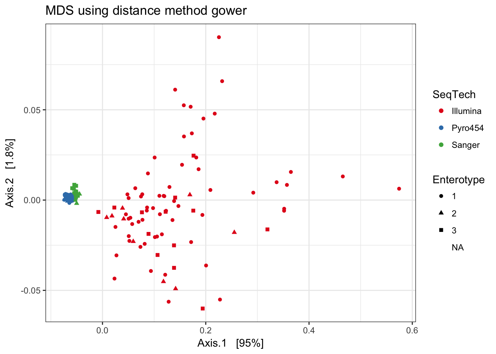

The distance function in phyloseq
The distance function takes a phyloseq-class object and method option, and returns a dist-class distance object suitable for certain ordination methods and other distance-based analyses. There are currently 44 explicitly supported method options in the phyloseq package, as well as user-provided arbitrary methods via an interface to vegan::designdist. For the complete list of currently supported options/arguments to the method parameter, type distanceMethodList in the command-line of your R session. Only sample-wise distances are currently supported (the type argument), but eventually OTU-wise (e.g. species) distances will be supported as well.
See the in-package documentation of distance for further details:
?distanceUsage
distance(physeq, method="unifrac", type="samples", ...)Example: “Enterotypes” dataset using many different methods
Because the distance() function organizes distance calculations into one function, it is relatively straightforward to calculate all supported distance methods and investigate the results. The following code will perform such a loop on the “Enterotypes” dataset, perform multi-dimensional scaling (a.k.a. principle coordinates analysis), and plot the first two axes, shading and shaping the points in each plot according to sequencing technology and assigned “Enterotype” label.
Note that we have omitted the options that require a phylogenetic tree because the "enterotype" example dataset currently included in the phyloseq-package does not have one.
Note that this may take a little while to run, depending on the size of your data set, but you may not be interested in all supported distances…
Load phyloseq
Of course we need to start this tutorial by loading the phyloseq package. This assumes you have already installed phyloseq.
library("phyloseq"); packageVersion("phyloseq")## [1] '1.16.2'library("ggplot2"); packageVersion("ggplot2")## [1] '2.1.0'library("plyr"); packageVersion("plyr")## [1] '1.8.4'ggplot2 package theme set. See the ggplot2 online documentation for further help.
theme_set(theme_bw())Load the enterotype data
data(enterotype)Some preliminary filtering. More advanced preprocessing is recommended.
Remove the OTUs that included all unassigned sequences ("-1")
enterotype <- subset_species(enterotype, Genus != "-1")## Warning: 'subset_species' is deprecated.
## Use 'subset_taxa' instead.
## See help("Deprecated") and help("phyloseq-deprecated").The available distance methods coded in distance
dist_methods <- unlist(distanceMethodList)
print(dist_methods)## UniFrac1 UniFrac2 DPCoA JSD vegdist1
## "unifrac" "wunifrac" "dpcoa" "jsd" "manhattan"
## vegdist2 vegdist3 vegdist4 vegdist5 vegdist6
## "euclidean" "canberra" "bray" "kulczynski" "jaccard"
## vegdist7 vegdist8 vegdist9 vegdist10 vegdist11
## "gower" "altGower" "morisita" "horn" "mountford"
## vegdist12 vegdist13 vegdist14 vegdist15 betadiver1
## "raup" "binomial" "chao" "cao" "w"
## betadiver2 betadiver3 betadiver4 betadiver5 betadiver6
## "-1" "c" "wb" "r" "I"
## betadiver7 betadiver8 betadiver9 betadiver10 betadiver11
## "e" "t" "me" "j" "sor"
## betadiver12 betadiver13 betadiver14 betadiver15 betadiver16
## "m" "-2" "co" "cc" "g"
## betadiver17 betadiver18 betadiver19 betadiver20 betadiver21
## "-3" "l" "19" "hk" "rlb"
## betadiver22 betadiver23 betadiver24 dist1 dist2
## "sim" "gl" "z" "maximum" "binary"
## dist3 designdist
## "minkowski" "ANY"Remove the two distance-methods that require a tree, and the generic custom method that requires user-defined distance arguments.
# These require tree
dist_methods[(1:3)]## UniFrac1 UniFrac2 DPCoA
## "unifrac" "wunifrac" "dpcoa"# Remove them from the vector
dist_methods <- dist_methods[-(1:3)]
# This is the user-defined method:
dist_methods["designdist"]## designdist
## "ANY"# Remove the user-defined distance
dist_methods = dist_methods[-which(dist_methods=="ANY")]Loop through each distance method, save each plot to a list, called plist.
plist <- vector("list", length(dist_methods))
names(plist) = dist_methods
for( i in dist_methods ){
# Calculate distance matrix
iDist <- distance(enterotype, method=i)
# Calculate ordination
iMDS <- ordinate(enterotype, "MDS", distance=iDist)
## Make plot
# Don't carry over previous plot (if error, p will be blank)
p <- NULL
# Create plot, store as temp variable, p
p <- plot_ordination(enterotype, iMDS, color="SeqTech", shape="Enterotype")
# Add title to each plot
p <- p + ggtitle(paste("MDS using distance method ", i, sep=""))
# Save the graphic to file.
plist[[i]] = p
}Combine results
Shade according to sequencing technology
df = ldply(plist, function(x) x$data)
names(df)[1] <- "distance"
p = ggplot(df, aes(Axis.1, Axis.2, color=SeqTech, shape=Enterotype))
p = p + geom_point(size=3, alpha=0.5)
p = p + facet_wrap(~distance, scales="free")
p = p + ggtitle("MDS on various distance metrics for Enterotype dataset")
p
Shade according to assigned enterotype
df = ldply(plist, function(x) x$data)
names(df)[1] <- "distance"
p = ggplot(df, aes(Axis.1, Axis.2, color=Enterotype, shape=SeqTech))
p = p + geom_point(size=3, alpha=0.5)
p = p + facet_wrap(~distance, scales="free")
p = p + ggtitle("MDS on various distance metrics for Enterotype dataset")
p
Compare results
The following are some selected examples among the created plots.
Jensen-Shannon Divergence
print(plist[["jsd"]])
Jaccard
print(plist[["jaccard"]])
Bray-Curtis
print(plist[["bray"]])
Gower
print(plist[["gower"]])
w
print(plist[["w"]])